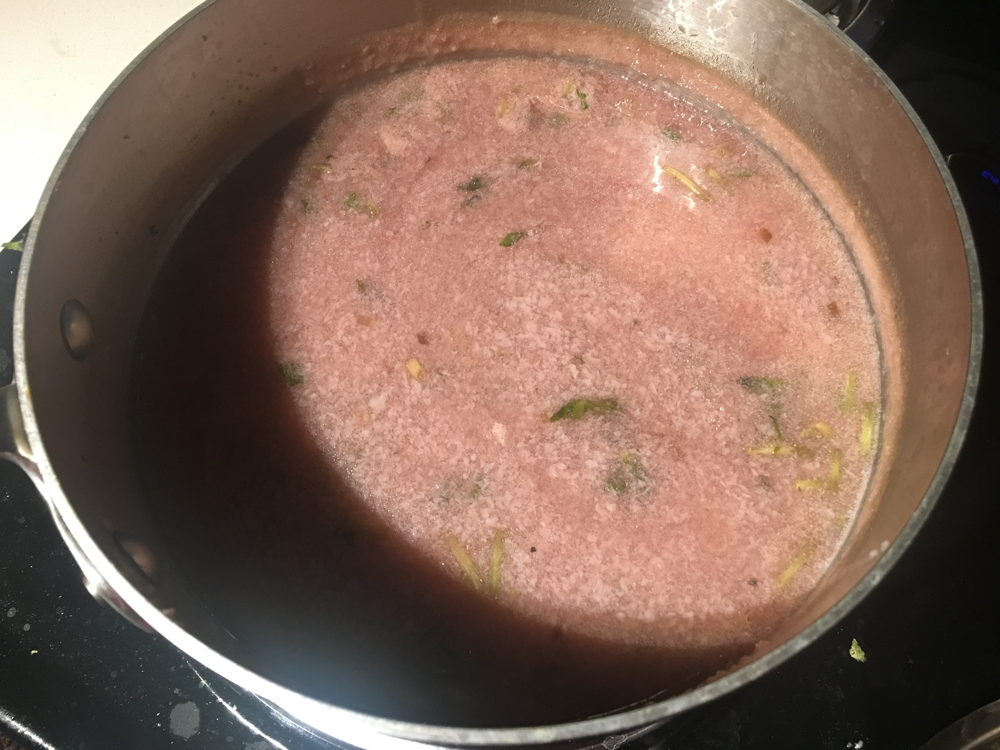

| Other | Meat | Veggie | Fruit |
|---|---|---|---|
| chicken broth | shrimp | rice paddy herbs | |
| pepper | shallot | ||
| salt | ube | ||
| wonton soup base |
| instructions |
|---|
| Process peeled shrimp, salt, pepper, and shallots |
| Golden minced shallots |
| Add shrimp mixture |
| Add chicken broth and wonton soup base |
| Bring to a boil, then lower heat |
| Add mashed ube (khoai mo bao) and simmer |
| Add rice paddy herbs (ngo om) in the last few minutes |